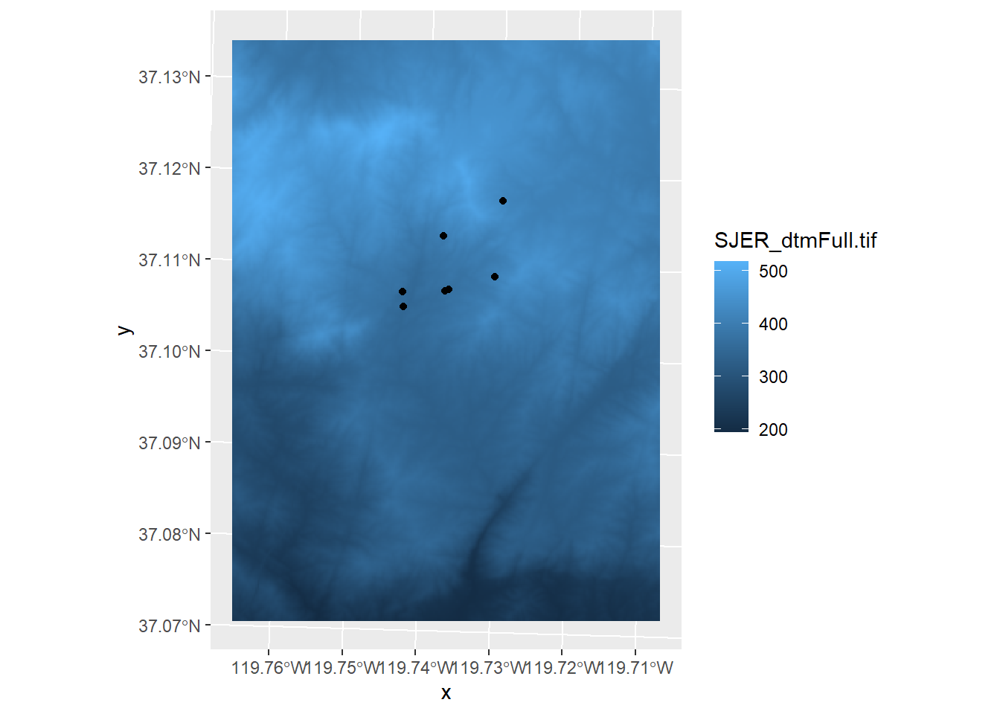

Chapter 6 Dealing with Projections
At the end of the vectors 4 chapter, we tried to map the plots layer for the San Joaquin Experimental Range over the digital terrain model (dtm). The two layers didn’t display properly, so something went wrong. To see what happened, we need to have a look at the co-ordinate reference system (crs) for the two layers. Use the st_crs command to see what this is for each layer.
st_crs(SJER_plots)## Coordinate Reference System:
## User input: WGS 84
## wkt:
## GEOGCRS["WGS 84",
## DATUM["World Geodetic System 1984",
## ELLIPSOID["WGS 84",6378137,298.257223563,
## LENGTHUNIT["metre",1]]],
## PRIMEM["Greenwich",0,
## ANGLEUNIT["degree",0.0174532925199433]],
## CS[ellipsoidal,2],
## AXIS["latitude",north,
## ORDER[1],
## ANGLEUNIT["degree",0.0174532925199433]],
## AXIS["longitude",east,
## ORDER[2],
## ANGLEUNIT["degree",0.0174532925199433]],
## ID["EPSG",4326]]st_crs(SJER_dtm)## Coordinate Reference System:
## User input: WGS 84 / UTM zone 11N
## wkt:
## PROJCRS["WGS 84 / UTM zone 11N",
## BASEGEOGCRS["WGS 84",
## DATUM["World Geodetic System 1984",
## ELLIPSOID["WGS 84",6378137,298.257223563,
## LENGTHUNIT["metre",1]]],
## PRIMEM["Greenwich",0,
## ANGLEUNIT["degree",0.0174532925199433]],
## ID["EPSG",4326]],
## CONVERSION["UTM zone 11N",
## METHOD["Transverse Mercator",
## ID["EPSG",9807]],
## PARAMETER["Latitude of natural origin",0,
## ANGLEUNIT["degree",0.0174532925199433],
## ID["EPSG",8801]],
## PARAMETER["Longitude of natural origin",-117,
## ANGLEUNIT["degree",0.0174532925199433],
## ID["EPSG",8802]],
## PARAMETER["Scale factor at natural origin",0.9996,
## SCALEUNIT["unity",1],
## ID["EPSG",8805]],
## PARAMETER["False easting",500000,
## LENGTHUNIT["metre",1],
## ID["EPSG",8806]],
## PARAMETER["False northing",0,
## LENGTHUNIT["metre",1],
## ID["EPSG",8807]]],
## CS[Cartesian,2],
## AXIS["(E)",east,
## ORDER[1],
## LENGTHUNIT["metre",1]],
## AXIS["(N)",north,
## ORDER[2],
## LENGTHUNIT["metre",1]],
## USAGE[
## SCOPE["unknown"],
## AREA["World - N hemisphere - 120°W to 114°W - by country"],
## BBOX[0,-120,84,-114]],
## ID["EPSG",32611]]Scroll through the results and compare the last set of numbers at the end of the file in the ID[] line. You should note that the SJER_plots file as an ID of 4325 and that the SJER_dtm has an ID of 32611. This indicates that the two layers have different coordinate systems. You can verify this by plotting each separately and cheeking the coordinate system labels on the map edges. The labels on the dtm are in UTM units, while the labels on the plots are in latitude and longitude. We need to convert the coordinate reference system (crs) of one of the layers to match the other. We use the st_transform function to create a new plots layer which has a projection system that matches the dtm layer.
SJER_plots_utm <- st_transform(SJER_plots, st_crs(SJER_dtm))Now you should be able to plot the two layers together
ggplot() +
geom_stars(data = SJER_dtm) +
geom_sf(data = SJER_plots_utm)
Now that you have the two data sets aligned, you can extract the elevation data for each point, which is explained in the chapter on extracting data 8. Before you do that, complete the exercises in the next chapter 7.